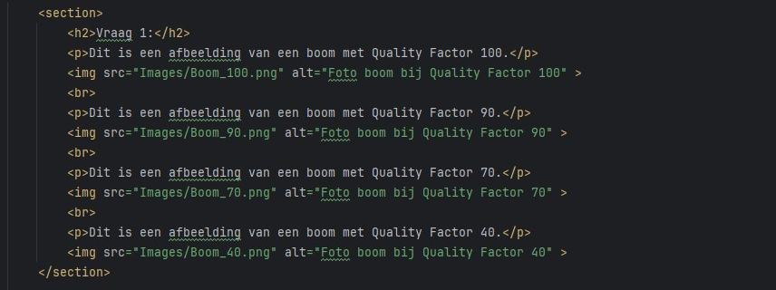

Vraag 1:
Dit is een afbeelding van een boom met Quality Factor 100.
Dit is een afbeelding van een boom met Quality Factor 90.
Dit is een afbeelding van een boom met Quality Factor 70.
Dit is een afbeelding van een boom met Quality Factor 40.
Vraag 2: Maak een screenshot van Webstorm waarop wat tekst te zien is, je kunt dit makkelijk doen met de Snipping Tool in Windows. Bewaar dit in JPEG formaat en gebruik de eerdere webpagina om de “Quality Factor” te veranderen. Probeer bv. eens 70 en 40. Je kunt in de preview inzoomen en door de afbeelding scrollen. Kijk aandachtig naar de tekst in de afbeelding, wat valt je op?
Dit is een afbeelding van Webstorm met Quality Factor 100.
